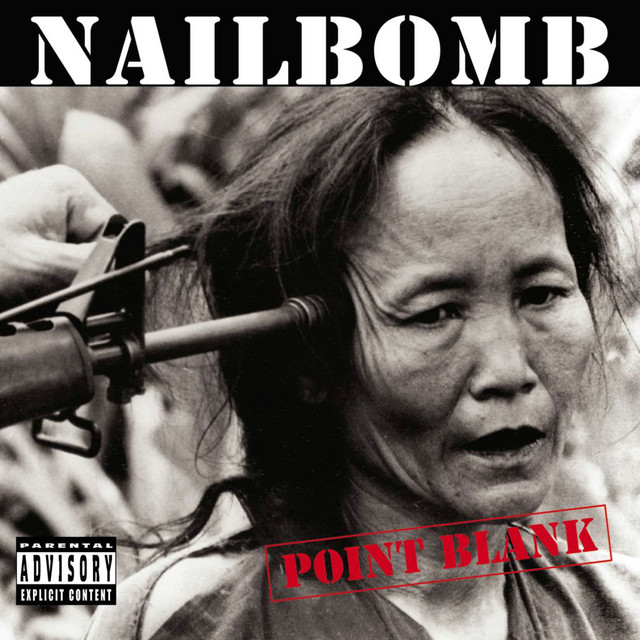

Nailbomb's History
Nailbomb was a supergroup with crust-punk influences. It was a one-off project. The band had Alex Newport from Fudge Tunnel as a vocalist; Fudge Tunnel was a band that was compared to The Melvins and Nirvana.
Nailbomb's Albums
- Point Blank (1994)
Point Blank is the only official studio album which Nailbomb released.
- Proud to Commit Commercial Suicide
This was a live album recorded at the Dynamo Open Air festival in 1995, in the Netherlands.

Industrial Influence
The band made use of industrial elements like drum machines. Their music made use of very distorted sounds, and they would sample audio from various places to make social statements. While not being seen as an incredibly "industrial" band, especially by modern standards, their influence is still important.
Nailbomb's Wiki